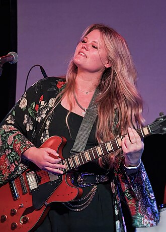

Lauren Anderson
Lauren Anderson is an American singer-songwriter and guitarist from Chicago, Illinois. While often cited as a blues artist, Anderson's work draws from multiple genres, including soul, rock, country, and Americana. Her albums have charted on the Billboard Blues Albums chart, and she has received multiple Josie Music Awards, including Best Jazz/Blues Vocalist of the Year in 2025. In 2025, she competed on Season 28 of NBC's The Voice as a member of Snoop Dogg's team.
Complete Discography & Tracklists (24)
2015 Truly Me 🎵 14 Tracks
2018 The Game 🎵 6 Tracks
2019 Won't Stay Down 🎵 5 Tracks
2021 Love on the Rocks 🎵 9 Tracks
2021 Keep On 🎵 0 Tracks
No tracks registered.